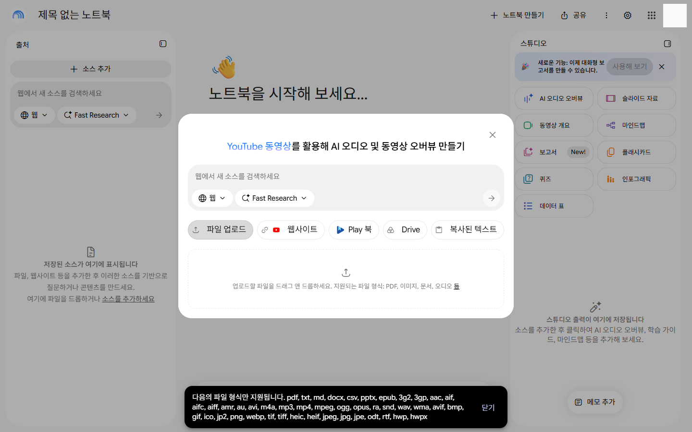
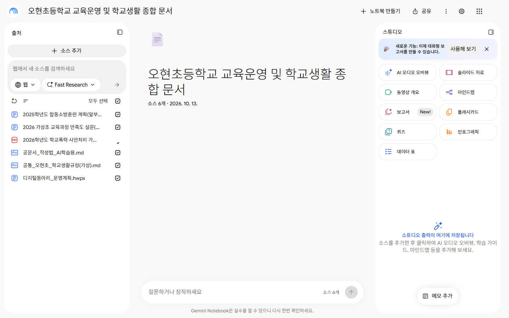
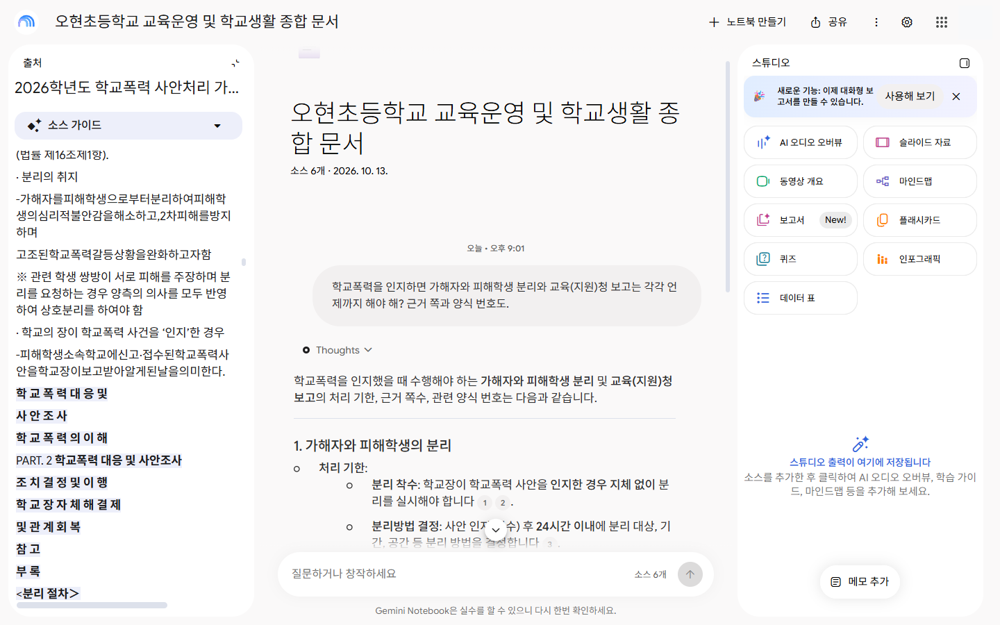
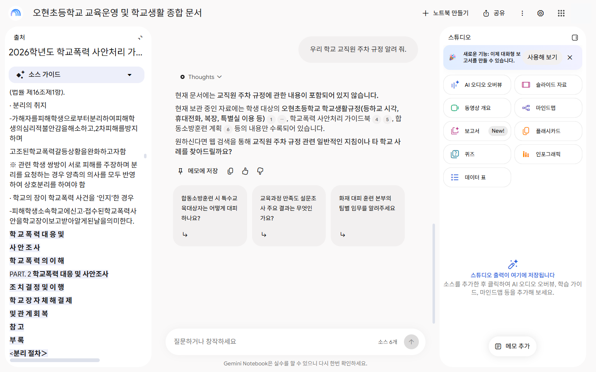
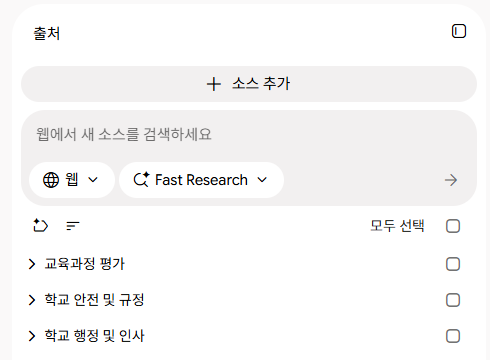
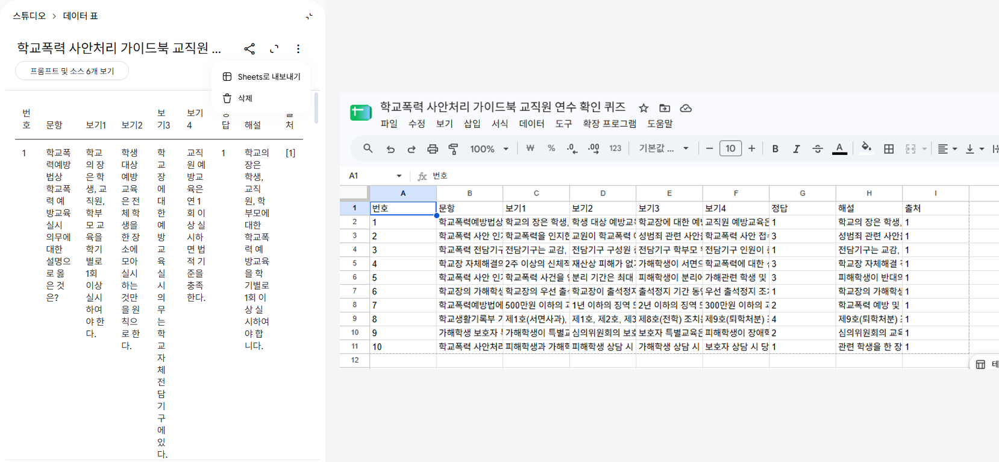
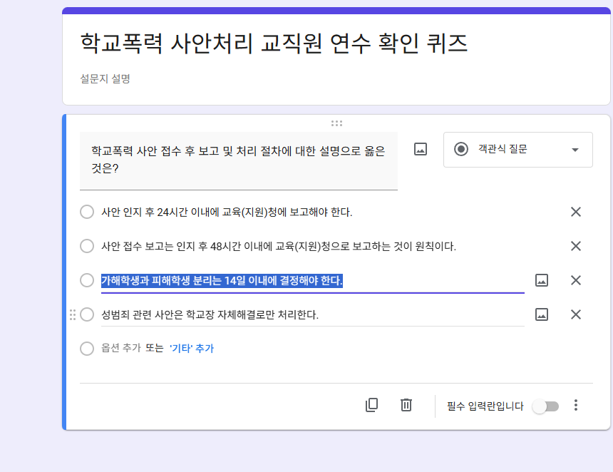

NOTEBOOK LM · 심화편 · 90분
지어내지 않는 AI,
근거를 대는 AI
규정집·공문서 지침·학교폭력 매뉴얼을 소스로 넣으면, Gemini 노트북은 그 자료 안에서만 답하고 답마다 인용 번호를 붙입니다. 자료에 없으면 "소스에 없습니다"라고 말하게 할 수 있어요. 그래도 마지막 확인은 사람이 합니다.
| 구분 | 일반 Gemini 대화 | Gemini 노트북 (노트북 LM) |
|---|---|---|
| 무엇으로 답하나 | 인터넷 전체에서 배운 지식으로 그럴듯하게 | 내가 넣은 자료(규정·지침·매뉴얼) 안에서만 |
| 근거 | 출처를 알기 어려움 | 답마다 인용 번호 — 누르면 원문 위치로 |
| 모르는 것 | 지어낼 수 있음 | "소스에 없습니다" (맞춤 지침으로 고정) |
| 쓰임 | 범용 | 업무 전용 — 우리 학교 규정·공문 지침에 맞춘 답 |
| 학교 계정(goe) | — | 올린 자료와 대화가 AI 학습에 쓰이지 않고 비공개로 유지된다고 화면에 안내 |
한/글 파일(hwp·hwpx)을 그대로 소스로 올릴 수 있어요
goe 학교 계정 노트북의 소스 추가 창에서 확인했어요(2026. 10. 13.). 지원 형식: pdf, txt, md, docx, csv, pptx, epub, … odt, rtf, hwp, hwpx. 계획서·공문·서식을 PDF로 바꿀 필요 없이 한/글 파일 그대로 넣으세요. 단, 엑셀(xlsx)은 안 올라갑니다 → CSV로 저장하거나 구글 시트(Drive)로 넣으세요.

화면 세 칸과
90분 흐름


| 시간 | 실습 | 하는 일 | 결과물 |
|---|---|---|---|
| 0–10 | 00 시작하기 | 노트북 만들기 → 맞춤 지침 → 일반 Gemini와 같은 질문 비교 | 인용 있는 답 vs 없는 답 |
| 10–28 | 01 공문서 | 규칙 표 → 인용 확인 → 메모를 [검증] 소스로 변환 → 틀린 기안문 찾기 → 기안문 쓰기 | 규정 근거가 달린 기안문 |
| 28–55 | 02 엑셀→슬라이드 | 설문 평균 채점 → 동아리 결과 문단 → 결과 보고 슬라이드(하루 3회) → 인포그래픽 | 운영 결과 보고 슬라이드 |
| 55–70 | 03 내 업무 규정 | 학교폭력 / 인사·전보 / 방과후돌봄 / 예산 / 학교자율시간 / 급식 중 하나 → 라벨·소스 점검 → 함정 질문 | "소스에 없습니다" 확인 |
| 70–80 | 04 퀴즈→구글 폼 | 작업실 데이터 표 → 구글 시트로 내보내기 → 폼 | 교직원 연수 퀴즈 폼 |
| 80–90 | 정리 · 더 해 보기 | 오디오·동영상·마인드맵→나노바나나·클래스룸(미리 만든 예시) · 05 도전 | 에이전트=파일을 고친다 / 노트북=근거로 답한다 |
노트북은 하나만 만들고, 01·02 자료와 03에서 고른 자료를 넣은 뒤 라벨(자료실 왼쪽 위)로 나눕니다. 학교 계정이라도 학생 실명·주민번호 같은 개인정보는 지우고 올리세요.
시작하기 — 같은 질문, 다른 답
노트북을 만들고 [노트북 구성 → 대화 스타일 → 맞춤]에 아래 지침을 붙여 넣은 뒤, 같은 질문을 일반 Gemini와 노트북에 해 봅니다.
맞춤 지침 (모든 노트북 공통)
비교 질문 카드 — ① 일반 Gemini ② 노트북(공문서 소스를 넣은 뒤)
- 노트북 답에 [1] [2] 같은 인용 번호가 붙나요? 눌러 보면 원문 어디로 가나요?
- 함정 질문에 일반 Gemini는 무엇이라고 하나요? 노트북은 "소스에 없습니다"라고 하나요?


공문서 — 규정에 맞춘 기안문
경기도교육청 공문서 작성 규정을 소스로 넣고, 규칙을 표로 뽑아 인용으로 확인한 뒤 기안문을 씁니다. 계획서는 한/글 파일 그대로 올려요.
이런 내용을 다뤄요
- 날짜·시간·금액·'붙임'·'끝' 규칙 표 → 인용 2개 이상 눌러 원문 대조
- 맞으면 [메모에 저장] → 메모 … → [소스로 변환], 제목 앞에 [검증] — 확인한 답만 소스가 됩니다
- 일부러 틀린 곳 9개를 심은 기안문에서 규정 위반 찾기
- 계획서에 없는 내용은 [확인 필요]로 남기기
엑셀 → 슬라이드 — 숫자를 지키는지 채점
설문 결과의 정답(평균이 낮은 문항)을 강사가 알고 있어요. 노트북이 숫자를 정확히 지키는지 채점한 뒤, 계획 → 실적 → 결과 보고 슬라이드까지 하나의 업무 흐름으로 이어 갑니다.
※ 엑셀(xlsx)은 소스로 올라가지 않아요. 엑셀에서 다른 이름으로 저장 → CSV(UTF-8)로 바꾸거나, 구글 드라이브에 올려 구글 시트로 연 뒤 소스 추가 → Drive에서 고르세요.
슬라이드는 [작업실 → 슬라이드 → 오른쪽 화살표(>)]에 붙여 넣어요. 무료는 하루 3회라 한 번에!


슬라이드 심화
개요 → 캐릭터 세트 → 같은 디자인으로 끝없이 늘리기
① 개요는 질문창에서 뽑으니 슬라이드 횟수가 들지 않아요. ③에서 만든 슬라이드를 PDF로 내려받아 다시 소스로 올린 뒤 ④를 넣으면 16장부터 같은 디자인으로 이어집니다.
② 캐릭터 세트는 Gemini 앱(나노바나나)에서 만들어 PNG로 소스에 올려요.
⑤ 한 장만 고치기
⑥ 인포그래픽 — 스타일·방향·세부 정보
화살표(>)에서 스타일(스케치노트·귀여움·클레이·에디토리얼·안내형·벤토 그리드·블록·과학·일본 애니메이션·프로페셔널), 방향(가로 16:9 / 세로 / 정사각형), 세부 정보(간결 / 표준 / 상세)를 고르고:
내 업무 규정 노트북 — 하나 골라서
내 업무에 맞는 트랙 하나를 고릅니다. 모든 트랙에 공통_오현초_학교생활규정(가상).md를 함께 넣고, 마지막은 함정 질문으로 "소스에 없습니다"를 확인해요.
모든 트랙에서 먼저
- 라벨 — 자료실 왼쪽 위 라벨 버튼으로 자동 분류. 한 자료에 라벨 여러 개 가능, 슬라이드를 만들 때 라벨만 골라 그 주제만 담기
- 소스 점검 — 깡통·중복·지난 지침 골라내기

A학교폭력사안이 접수됐을 때 오늘부터 할 일
'24시간', '48시간' 같은 기한마다 인용을 눌러 가이드북 원문과 맞는지 확인하세요.
B인사·전보내 전보·근무기간 규정 찾기
이 PDF는 글자 사이 띄어쓰기가 빠져 있어 AI가 잘못 읽을 수 있어요. 인용 확인이 특히 중요합니다. (2번은 가상의 예)
C방과후돌봄길라잡이로 묻고, 한/글 서식으로 가정통신문 쓰기
HWP 서식집을 한/글 파일 그대로 소스로 넣고, 서식 1번을 우리 학교용으로 채웁니다.
D예산·회계견적 물품을 어느 예산으로 살까
E학교자율시간(연구부)한 장 인포그래픽 + 협의회 슬라이드 + 마인드맵
마인드맵의 가지(노드)를 누르면 그 내용만 질문창에 근거와 함께 정리됩니다.
F급식·식생활인포그래픽 모음 + 가정통신문
숫자(81·29·23)가 자료와 같은지 인용으로 확인하세요.
공통 함정 질문 — "소스에 없습니다"면 성공
일반 Gemini 대화창에도 같은 질문을 해 보고 비교해 보세요.
퀴즈 → 데이터 표 → 시트 → 폼
03에서 쓴 노트북 그대로, 근거 쪽이 붙은 교직원 연수 확인 퀴즈를 만들어 구글 폼으로 내보냅니다. 해설에 근거가 있으니 정답 시비가 없어요.
- [작업실 → 데이터 표 → 화살표(>)]에 붙여 넣기 (메뉴가 없으면 질문창에 같은 문장 + "표로")
- 만들어진 표 → [구글 시트로 내보내기] → 정답·근거 쪽을 2문항 이상 인용으로 확인
- 구글 폼 새로 만들기 → Gemini(✨)에서 그 시트를 골라 퀴즈 만들기 → 설정에서 '퀴즈로 만들기' 켜고 정답·해설 확인
- 폼에 Gemini가 안 보이면 시트의 문항을 폼에 직접 붙여 넣기 (예비 방법)
- 비교: [작업실 → 퀴즈] 버튼으로 노트북 안에서 바로 풀어 보기


작업실 더 해 보기
오래 걸리는 동영상·오디오는 강사가 미리 만든 예시를 함께 봅니다. 연수 뒤에 하나씩 눌러 보세요.
- 동영상 개요 — 화살표(>)에서 설명/요약, 스타일(화이트보드·귀여움·애니메이션·수채화·레트로 등), 언어 선택. 설명 영상은 10분 안팎. 내려받기: 결과 오른쪽 위 ⋮ → 다운로드
- 시네마틱 영상 — 구글 계정 언어를 영어로 바꾸면 메뉴가 보여요. 결과는 영어, 30분 이상 걸림
- 세로 숏폼(9:16) — 아직 한글 자막 미지원 (2026. 8. 기준)
- 마인드맵 → 나노바나나 — 마인드맵을 내려받거나 캡처해 Gemini 앱에 올리고 위 '마인드맵 다듬기'
- Gemini 앱에서 노트북 쓰기 — Gemini 왼쪽 메뉴 [노트북] → 이 노트북 선택 → 소스를 바탕으로 이어서 대화·이미지 만들기
- 구글 클래스룸 연동 (goe 학교 계정) — 수업 과제 만들기(+) → [NotebookLM] → 기존 노트북 선택. 관리자가 노트북 사용 권한을 켜 둬야 보여요
- 맞춤 대화 설정 — [노트북 구성] → 대화 스타일 '맞춤', 답변 길이 '길게'
도전 — 교과서 PDF 한 개로
기초편(사회 3-2 교통의 변화)과 같은 흐름을 수업용으로. 과학 5-2-4 교과서로 학생 퀴즈 폼까지 만들어 보세요.
→ 04처럼 데이터 표 → 구글 시트 → 구글 폼 퀴즈로. 과학 5-2-4 교과서 PDF는 용량이 커서 zip에서 뺐어요 — 교과서 누리집에서 받아 쓰세요.
막히면 이렇게
- 엑셀(xlsx)이 안 올라가요 → 엑셀에서 CSV(UTF-8)로 저장하거나, 구글 드라이브에 올려 구글 시트로 연 뒤 소스 추가 → Drive
- 한/글 파일은요? → hwp·hwpx 그대로 됩니다. pdf·txt·md·docx·csv·pptx도 됩니다 (goe 계정에서 2026. 10. 13. 확인)
- 무료 하루 한도 → 채팅 50회 · 슬라이드 3회 · 오디오 개요 3회. 슬라이드는 개요를 질문창에서 먼저 확정하고 한 번에
- 영상이 오래 걸려요 → 생성은 걸어 두고 다음 실습으로. 연수 중에는 미리 만든 예시를 봅니다
- 답이 이상해요 → 인용 번호를 눌러 원문 확인. 띄어쓰기가 빠진 PDF·표가 많은 PDF는 잘못 읽을 수 있어요
- AI 답을 소스로 바꿀 때 → 인용으로 확인한 것만, 제목 앞에 [검증]
기능 체크리스트
참고 영상·자료에 나온 기능이 이 페이지 어디에 있는지 모았어요.
| 기능 | 실습 위치 |
|---|---|
| 소스만 근거로 답 · 인용 번호 · "소스에 없습니다" | 00 비교 질문, 01, 03 함정 질문 |
| 학교 계정은 학습에 안 쓰임 · 비공개 | 맨 위 비교표 |
| 자료 올리기: PDF·한/글(hwp·hwpx)·문서·CSV·웹·유튜브·드라이브·텍스트·사진 | 01~03 |
| 웹 검색(빠른/심층 조사)으로 소스 추가 | 03 — 사람이 고른 것만 들이기 |
| 라벨 (자동 분류, 라벨만 골라 슬라이드) | 03 모든 트랙에서 먼저 |
| 맞춤 대화 설정 · 답변 길이 | 00 맞춤 지침, 더 해 보기 |
| 메모에 저장 → 소스로 변환 | 01 ([검증] 규칙) |
| 소스 점검 (깡통·중복 소스) | 03 모든 트랙에서 먼저 |
| 슬라이드 + 스타일 옵션 | 02-3 |
| 개요 → 캐릭터 세트 → PDF 재소스로 무한 확장 · 한 장 고치기 | 02 슬라이드 심화 ①~⑤ |
| 인포그래픽 (스타일 · 방향 · 세부 정보) | 02 슬라이드 심화 ⑥, 03-E·F |
| 마인드맵 + 노드 클릭 → 질문창 | 03-E |
| 마인드맵 → 나노바나나로 다듬기 | 더 해 보기 |
| 동영상 개요 · 시네마틱 · 숏폼 | 더 해 보기 |
| 오디오 개요 (팟캐스트) | 더 해 보기 |
| 데이터 표 → 구글 시트 내보내기 | 04 |
| 퀴즈 (작업실) · 형성평가 출제 | 04, 05 |
| Gemini 앱 '노트북' 메뉴 · 구글 클래스룸 연동 | 더 해 보기 |
| 업무 미션: 학교자율시간 연구부장 / 급식 인포그래픽·가정통신문 | 03-E, 03-F |
| 하루 한도 (채팅 50 · 슬라이드 3 · 오디오 3) | 막히면 이렇게 |
프롬프트·기능 참고: 쓰로인훈쌤 — NotebookLM 라이브 연수 · 오빠두엑셀 — 노트북LM 2.0 핵심 기능 · 강성희 — 선생님을 위한 노트북LM 활용법